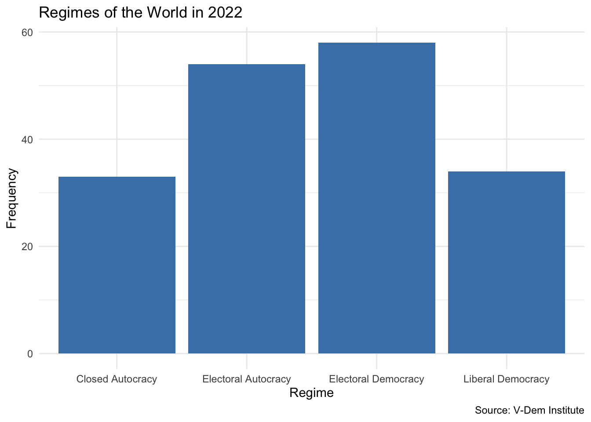
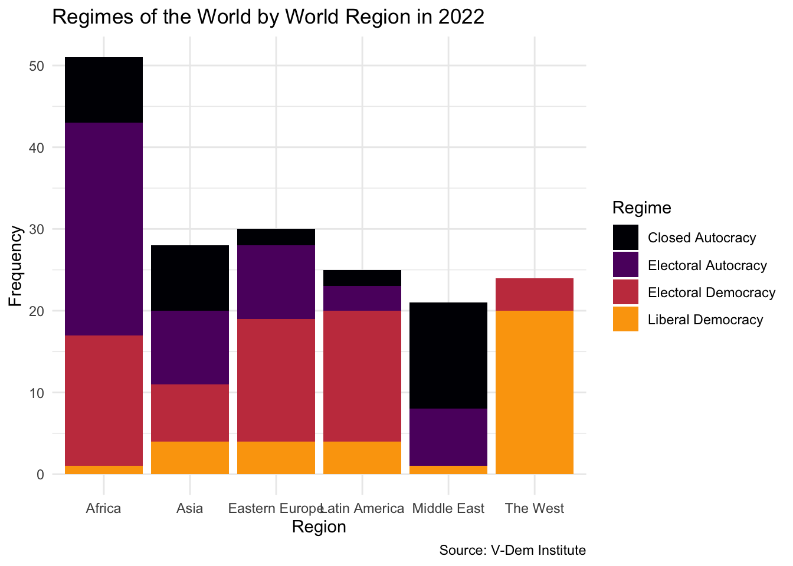
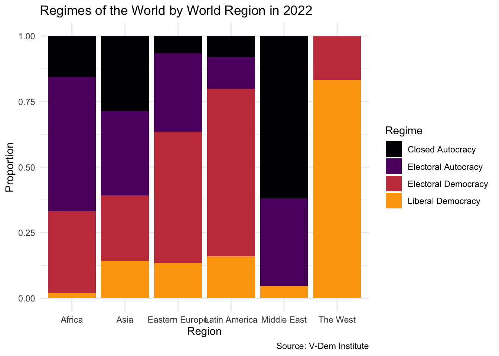

Click on Code toggle below to unfold the setup code chunk. Then, copy and run the code in your Quarto notebook to load the necessary packages and create the data frame for this lesson.
In this module, we explore how to work with categorical data, focusing on how to classify, summarize, and visualize it effectively. We begin by discussing the different types of data—categorical vs. numerical, discrete vs. continuous, and so on—and why it matters to distinguish among them. Then, using democracy indicators from the V-Dem dataset, we learn how to visualize distributions of categorical variables with geom_bar(). Finally, we take our analysis further by examining how regime types vary by world region, introducing the distinction between nominal and ordinal categorical variables and learning how to create comparative bar plots using proportions. Along the way, you’ll have opportunities to apply what you’ve learned through hands-on coding and interpretation.
What Kind of Data Do We Have?
Before we can summarize or model any dataset, we need to pause and reflect on what kind of data we’re actually dealing with. This is an important consideration because how we classify our data shapes the types of questions we can ask, the summaries we can produce, and the visualizations we can make.
Data can differ in many important ways. One useful distinction is between anecdotal and representative data. Anecdotal data might come from a single experience or a small number of observations, like a friend’s story about a trip or a journalist’s report on a protest. These can be powerful or evocative, but they don’t necessarily generalize. In contrast, representative data are collected systematically with an eye toward capturing a larger population or phenomenon. For example, a random sample of households in a country tells us much more about living conditions overall than a few interviews with individual families.
Another key distinction is between census and sample data. A census tries to gather data on the entire population—think of the U.S. Census or a complete list of all registered voters. Most often, though, we work with samples: smaller, more manageable subsets of data drawn from a larger group. Whether we’re looking at a dozen countries or a thousand people, it’s important to understand how that sample was drawn and what population it represents.
We also need to be clear on whether our data come from an observational or an experimental study. Observational data are collected without interfering with the system we’re studying—just watching and recording. Experimental data, on the other hand, involve interventions or treatments, like randomly assigning people to different programs and comparing outcomes.
One of the most fundamental distinctions—and the focus of this module—is between categorical and numerical variables. Categorical variables place observations into groups, like types of political regimes or preferred news sources. Numerical variables are measured on a scale, such as GDP per capita or number of protests.
Among numerical variables, we often distinguish between discrete variables, which take whole number values (like counts), and continuous variables, which can take on any value in a range (like income or temperature).
The way we collect data also matters. Are we working with a cross-sectional snapshot, showing one moment in time? Or is it a time series, tracking changes over time? In this class, we will be focused primarily on cross-sectional data, but it is important to realize when you are looking at a dataset that incorporates a time-series dimension.
Finally, not all data come in neat rows and columns. In this class we work with structured data: spreadsheets, tables, and rectangular data frames. But data can also be unstructured, like text, images, or videos, which require special tools to analyze.
Understanding these distinctions gives us a foundation for exploring the types of variables we encounter in political, social, and economic datasets.
Your Turn!!
Classify the following variables based on the distinctions we’ve just covered:
Is a country a democracy? (yes/no)
Polity score (ranges from -10 to 10)
V-Dem Polyarchy index (0 to 1)
V-Dem Regimes of the World classification (closed autocracy, electoral autocracy, etc.)
Number of protest events
Protest types (sit-in, march, strike, etc.)
Think about whether each variable is categorical or numerical, and if so, what kind. Can you spot any that might be tricky to classify?
Exploring Categorical Data
Let’s now take a closer look at categorical variables by examining a real-world dataset. One commonly used measure of democracy is V-Dem’s Regimes of the World classification. This variable categorizes countries into four types:
Closed Autocracy
Electoral Autocracy
Electoral Democracy
Liberal Democracy
These categories are mutually exclusive and ordered from least to most democratic, making this an ordinal categorical variable.
Let’s use the data from the prework section of this module to explore the distribution of these regime types across the world in 2022. We can start by just glimpsing the data to see what we have:
regime n
1 Closed Autocracy 33
2 Electoral Autocracy 54
3 Electoral Democracy 58
4 Liberal Democracy 34
This gives us a frequency table showing how many countries fall into each regime category. But sometimes, a table doesn’t give us the full picture. Visualizations can help us better see patterns and communicate them clearly. Let’s create a bar plot using the geom_bar() geom:
vdem2022|>ggplot(aes(x =regime))+geom_bar(fill ="steelblue")+labs( x ="Regime", y ="Frequency", title ="Regimes of the World in 2022", caption ="Source: V-Dem Institute")+theme_minimal()

This simple bar plot provides an immediate visual summary of the global distribution of regime types in 2022. We see that electoral democracies are the most common regime type, followed by electoral autocracies, with closed autocracies being the least common.
The plot highlights the usefulness of geom_bar() as a straightforward way to create bar plots in ggplot2 when working with categorical variables. Unlike geom_col(), which requires both x and y aesthetics (typically used when you already have counts or proportions computed), geom_bar() automatically calculates the heights of the bars for you. It counts the number of occurrences of each category in the variable you supply to the x aesthetic.
This makes geom_bar() particularly convenient for quick summaries. It’s similar in spirit to geom_histogram(), which bins and counts continuous data, except that here, the binning is categorical. You only need to specify the variable for the x-axis—ggplot2 handles the y-axis internally based on the counts.
From here, we can begin asking deeper questions such as whether certain regime types are more common in some regions than others, or how these distributions change over time. We’ll explore these questions as we move forward.
Your Turn!!
Expore the distribution of regimes for a different year
Preprocess your data to include only the year you are interested in
Visualize the distribution of regimes using geom_bar()
What is different about the year that you chose relative to 2022?
Regimes by Region
Now that we’ve examined the overall distribution of regime types, let’s take things a step further and explore how these regimes vary across different parts of the world.
To do this, we can use a grouped bar plot by using geom_bar() with two categorical variables: region and regime type. Region will go on the x-axis, and regime type will be mapped to the fill aesthetic. This allows us to visualize how the distribution of political regimes differs from one world region to another.
vdem2022|>ggplot(aes(x =region, fill =regime))+geom_bar()+theme_minimal()+labs( x ="Region", y ="Frequency", title ="Regimes of the World by World Region in 2022", caption ="Source: V-Dem Institute", fill ="Regime")+scale_fill_viridis_d(option ="inferno", end =.8)

It’s worth noting the types of categorical variables we’re using here. Regime type is an ordinal categorical variable—its categories follow a meaningful order, from closed autocracy to liberal democracy. Region, on the other hand, is a nominal categorical variable—its categories (like Asia, Latin America, or Africa) don’t have an inherent order.
By combining a nominal categorical variable with an ordinal one in a single plot, we can explore important patterns in the data, such as where the most liberal democracies are located or where autocratic regimes are most common.
This chart gives us a useful breakdown of regime types by region. However, one challenge immediately becomes apparent: the number of countries varies across regions. Africa, for example, has far more countries than Eastern Europe or the Middle East. So, even if every region had the same proportions of regime types, the bars would be taller in regions with more countries.
To address this, we can switch from raw counts to proportions using position = "fill" inside geom_bar(). This stacks the bars so that they all have the same height, and each segment reflects the proportion of countries in each regime category:
vdem2022%>%ggplot(., aes(x =region, fill =regime))+geom_bar(position ="fill")+theme_minimal()+labs( x ="Region", y ="Proportion", title ="Regimes of the World by World Region in 2022", caption ="Source: V-Dem Institute", fill ="Regime")+scale_fill_viridis_d(option ="inferno", end =.8)

Now we can better compare regime distributions across regions, without having to worry about differences in the number of countries. For example, we might notice that liberal democracies are more prevalent in “The West,” while electoral democracies concentrate in Eastern Europe and electoral autocracies dominate in Africa.
Your Turn!!
Explore the distribution of regimes by region for a different year:
Use fetchdem to load data on regimes for a year that you are interested
Visualize the distribution of regimes using geom_bar() and position = "fill"